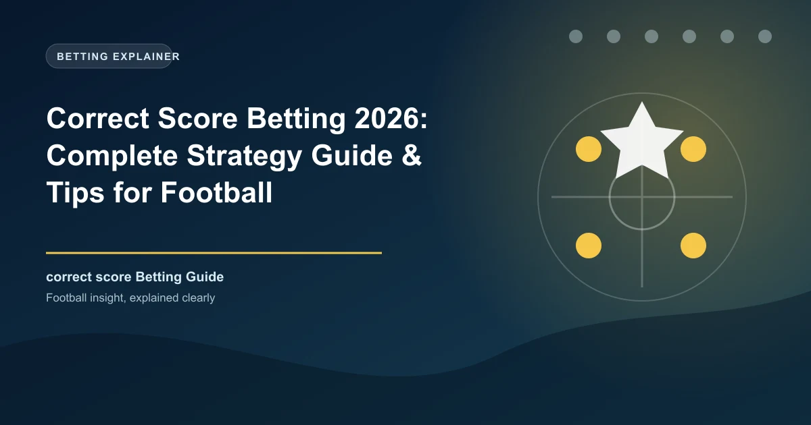

Correct score betting is one of the most lucrative markets in football wagering. Instead of predicting a win, draw, or goal count, you are forecasting the exact final scoreline � a task that demands precision but rewards with substantially higher odds. A single winning correct score bet can return 10x, 20x, or even 50x your stake, making it a favourite among value-seeking punters.
However, the challenge is real. With dozens of possible scorelines in any given match, spreading your bets blindly leads to losses. The key is to narrow the possibilities using data, statistical models, and league-specific patterns. This guide walks through everything you need to build a profitable correct score betting approach.
Correct score betting requires you to predict the exact final score of a match. Unlike 1X2 or over-under markets, there is no margin for error. A 2-1 prediction returns nothing if the match ends 2-0 or 1-1. Bookmakers price this difficulty into the odds, which means correct score markets routinely offer far higher payouts than simpler bet types.
For example, a match between evenly matched Premier League sides might price a 1-1 draw at around 6.50, while the same game's 1X2 market prices the draw at roughly 3.60. The premium reflects the precision required. The trade-off is clear: lower probability of winning, but significantly higher returns when you get it right.
Not all scorelines are created equal. Historical data across Europe's top leagues reveals a clear distribution pattern. Four scorelines dominate the landscape, together accounting for more than half of all match outcomes.
| Scoreline | Approximate Frequency | Best Application |
|---|---|---|
| 1-1 | 12-15% of matches | Evenly matched sides, draws |
| 1-0 | 10-12% of matches | Low-scoring, defensive matchups |
| 2-1 | 9-11% of matches | Open games with slight favourite |
| 2-0 | 7-9% of matches | Strong favourite at home |
| 0-0 | 5-7% of matches | Defensive stalemates |
| 0-1 | 5-7% of matches | Away side defensive win |
| 3-1 | 4-5% of matches | Dominant attacking performance |
| 3-0 | 3-4% of matches | One-sided contest |
The top four scorelines � 1-1, 1-0, 2-1, and 2-0 � consistently appear in 38-47% of all matches across the Premier League, La Liga, Serie A, Bundesliga, and Ligue 1. Building your selections around these core outcomes before expanding to less common scores is the foundation of a sound strategy.
Example: Over a 380-match Premier League season, roughly 40-50 matches end 1-1, 35-45 end 1-0, and 30-40 end 2-1. If you focus your staking on these three scorelines across a portfolio of matches, you are covering roughly one in three possible outcomes.
Bookmakers calculate correct score odds using a blend of statistical models and market sentiment. The underlying math typically involves the Poisson distribution, which estimates the probability of each team scoring a specific number of goals based on their average attacking and defensive strength.
The odds for each scoreline reflect its implied probability. A 1-1 draw at 6.50 implies roughly a 15.4% chance of occurring. A 4-0 rout at 51.00 implies a 1.96% chance. The bookmaker's margin is built into every price, so the sum of implied probabilities across all scorelines exceeds 100%.
Key factors that influence correct score odds include:
Compare correct score odds across multiple bookmakers before placing a bet. Prices for the same scoreline can vary by 10-20% between operators. Using odds comparison tools ensures you consistently get the best price, which directly improves long-term profitability.
The Poisson distribution is the most widely used statistical model for predicting football scores. It calculates the probability of a team scoring 0, 1, 2, 3, or more goals in a match based on their average goals scored and conceded.
Example: If Team A has an expected goals (xG) of 1.8 and Team B has an xG of 1.2, the Poisson probability of a 2-1 scoreline is calculated by multiplying P(Team A scores 2) � P(Team B scores 1). With ?=1.8, P(2) � 26.8%. With ?=1.2, P(1) � 36.1%. The combined probability for 2-1 is roughly 9.7%, implying fair odds of about 10.3.
While Poisson provides a solid mathematical foundation, it has limitations. It does not account for in-play events, red cards, weather conditions, or motivational factors. Use it as a baseline and overlay qualitative factors for a more complete picture.
xG data has become an essential tool for correct score analysis. Unlike raw goal totals, xG measures the quality of chances a team creates and concedes, offering a more reliable indicator of future performance than recent results alone.
When evaluating a match for correct score betting, examine each team's xG for and xG against over their last 5-10 matches. Key xG metrics to consider:
Look for matches where one team's xG is significantly higher than the opponent's but recent results have been narrow. This often signals that wider scorelines like 3-0 or 3-1 are more likely than the market prices reflect, creating value opportunities.
Different leagues produce different score distributions. Understanding these variations helps you tailor your selections to the competition you are betting on.
| League | Avg Goals/Game | Most Common Score | Correct Score Profile |
|---|---|---|---|
| Premier League | 2.8-3.0 | 1-1 | Balanced; 1-1, 2-1, 1-0 dominate |
| Bundesliga | 3.2-3.5 | 2-1 | High scoring; 2-1, 3-1, 2-0 overrepresented |
| Serie A | 2.6-2.9 | 1-1 | Tactical; 1-0, 0-0 more frequent |
| La Liga | 2.5-2.8 | 1-1 | Possession-heavy; 1-0, 2-0 common |
| Ligue 1 | 2.8-3.1 | 1-1 | Unpredictable; wider spread of scores |
| Eredivisie | 3.3-3.7 | 2-1 | Very high scoring; 3-1, 4-2 appear regularly |
| Scottish Premiership | 2.9-3.2 | 2-1 | Celtic/Rangers skew; wide scorelines vs rest |
| Primeira Liga | 2.4-2.7 | 1-1 | Lower scoring; 1-0, 0-0 overrepresented |
The Bundesliga and Eredivisie are ideal for exploring higher scorelines like 3-1, 3-2, and 4-2 because attacking play is prioritised and defensive organisation is often secondary. Serie A and the Primeira Liga, by contrast, reward focus on low-scoring outcomes like 1-0 and 0-0.
This structured framework helps you evaluate matches systematically and identify the most likely scorelines for any given fixture.
Calculate the expected total goals using each team's average goals scored and conceded. If both teams average over 2.5 combined goals per game, focus on 2-1, 3-1, and 2-0. If under 2.5, focus on 1-0, 0-0, and 1-1.
Compare league positions, recent form, and squad quality. A large gap favours scorelines like 2-0, 3-0, or 3-1. A narrow gap favours 1-1, 1-0, or 0-0.
Home teams score more and concede less. A strong home side facing a weak away side increases the probability of 2-0, 3-0, and 2-1. A strong away side at a mid-table opponent increases 1-1 and 0-1.
Compare each team's xG for and xG against over the last 5-10 matches. Teams with high xG but low actual goals may be underpriced in higher scorelines.
Review the last 5-10 meetings between these sides. If most matches feature a specific scoreline pattern, weight your selections accordingly.
A missing striker reduces goal probability for that side. A missing centre-back increases it for the opponent. Always check lineups before finalising selections.
With your shortlist of 2-4 likely scorelines, compare odds across multiple bookmakers. Bet only when the available odds exceed your estimated fair probability.
How you distribute your stake across multiple scorelines is as important as which scorelines you pick. Three primary approaches exist.
Split your total stake evenly across 2-4 selected scorelines. This is the simplest approach and ensures consistent returns if any selection wins. Best for beginners and when you have moderate confidence in multiple outcomes.
Allocate a larger portion of your stake to the most likely scoreline and smaller portions to less likely ones. For example, if you estimate 1-1 has a 15% chance and 2-1 has a 10% chance, stake proportionally. This maximises returns when your probability estimates are accurate.
Dutching involves calculating stake amounts so that any winning selection returns the same profit. This is useful when you want guaranteed returns across a set of mutually exclusive outcomes. Dutching calculators are widely available online to handle the arithmetic.
Example Dutching Calculation: You want to cover 1-0 (odds 7.0), 2-1 (odds 8.5), and 1-1 (odds 6.5) with a total stake of £30. To achieve equal profit, you would stake approximately £12.20 on 1-1, £9.30 on 1-0, and £8.50 on 2-1. Any winning bet returns roughly £79.
Warning: Never stake more than 2-5% of your bankroll on a single set of correct score bets. These markets have high variance, and even well-researched selections will lose more often than they win. Long-term profitability requires discipline and consistent staking.
Live correct score betting offers unique opportunities that pre-match markets do not. As a match unfolds, odds adjust dynamically based on the current score, time remaining, and in-play events.
Key in-play correct score scenarios to watch:
Watch matches live when betting in-play on correct scores. Statistical data alone cannot capture momentum shifts, tactical changes, or the body language of players. Visual assessment combined with live stats gives you an edge over bettors relying solely on data feeds.
Key Takeaway: Correct score betting is a long-term game. Focus on finding value, maintain strict bankroll management, and treat each bet as part of a larger portfolio rather than an individual gamble. The most profitable correct score bettors win at rates below 20% but achieve positive expected value through disciplined odds selection.
Not all bookmakers offer the same correct score coverage or odds quality. Here are the key factors to consider when choosing where to place your bets.
Bet365 is widely regarded as having the best correct score odds and widest selection, covering hundreds of leagues with competitive pricing. Other strong operators include William Hill, Unibet, and 22Bet, each offering distinct advantages in specific markets.
Bet365 offers the best correct score odds and widest selection of markets across hundreds of leagues worldwide.
Always compare odds across multiple bookmakers before placing your bet.
1-1 is the most common scoreline across Europe's top leagues, appearing in 12-15% of all matches. 1-0 and 2-1 are the next most frequent outcomes.
Bookmakers use Poisson distribution models combined with team strength data, historical patterns, and market sentiment to price each possible scoreline.
Yes, but it requires discipline, statistical analysis, and consistent value-seeking. Most profitable correct score bettors win fewer than 20% of their bets but achieve positive expected value through careful odds selection and bankroll management.
Covering 2-4 scorelines per match strikes the right balance between coverage and profitability. Covering more than 5 dilutes your returns significantly.
Both approaches have merit. Pre-match betting allows deeper analysis and better odds. In-play betting offers opportunities to capitalise on match events that shift probabilities. Many successful bettors combine both approaches.
Bundesliga and Eredivisie are excellent for higher scorelines due to their attacking nature. Serie A and Primeira Liga suit lower-scoring predictions. The Premier League offers the most balanced market with the deepest liquidity.
Yes. Home teams score 40-45% more goals on average. This significantly increases the probability of scorelines favouring the home side, such as 1-0, 2-0, and 2-1.
Probability-weighted staking (proportional to your estimated likelihood of each scoreline) combined with strict bankroll management (1-3% per group of bets) is the most sustainable approach for long-term profitability.
Catch live matches as they happen. Get golden tips and in-play alerts.
In-Play TipsGenerate optimized accumulator combinations from today's AI-powered predictions. Set your target odds and get instant ticket suggestions.
Pro Ticket Builder →18+ Only • Please Gamble Responsibly
All content on WinFulltime is for informational and entertainment purposes only. Betting involves financial risk. If you or someone you know has a gambling problem, please seek professional help.